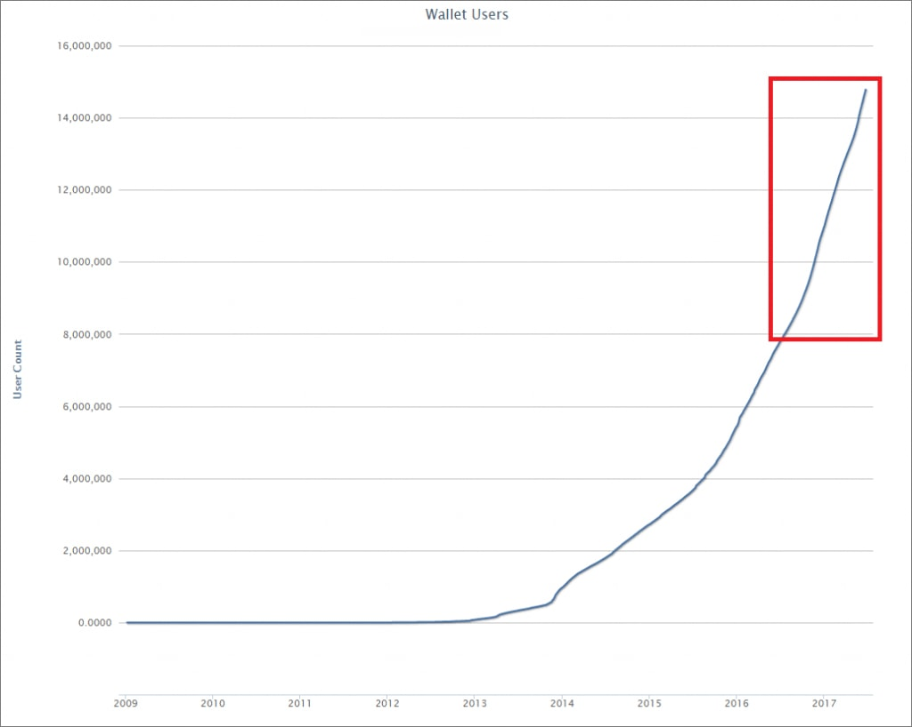

Je me souviens de la sortie du Bitcoin. Je ne lui ai pas laissé sa chance. Je ne referrai pas la même erreur.
Répondre . 13 . J’aime .Il y a 12 minutes.

Publié sur :
Vous pouvez maintenant rejoindre un nouveau système bancaire parallèle qui gagne en popularité en France. Et ce qui est incroyable c’est la vitesse à laquelle un petit dépôt sur ce compte peut se transformer en fortune, même aujourd’hui alors que les intérêts ne rapportent rien.
Par exemple, un jeune homme nommé Adrien Moreau a déposé 280€ sur ce nouveau type de compte. Il s’est confié aux journalistes à propos de cette incroyable découverte :
« Chaque matin, je me connectais... et je voyais le montant présent sur le compte augmenter ! »
Adrien était absolument stupéfait par cette bonne fortune. Après quatre mois de croissance et presqu’aucun effort de sa part il disposait de plus de 993 000€. Tout ceci à partir de son dépôt initial de moins de 300€.
Voici comment... Il n’a pas placé son argent en devise étrangère à risque ou dans une banque off-shore. Il n’a pas acheté d’actions ni aucun produit financier vendu par le passé par les banques ordinaires. En fait, ce qu’Adrien a fait de son argent ne ressemble à rien de ce que nous avons pu voir durant nos 20 ans de carrière en information financière.
Juste après avoir lu cette histoire, notre PDG a constitué une équipe de 15 journalistes financiers pour conduire une recherche complète sur cette nouvelle forme de compte.
Ce que notre enquête a montré nous a choqué. Et nous pensons que les résultats vont également vous surprendre.
Plus de 300 000 citoyens français ont ouvert des comptes, dans presque toutes les villes du pays. Aujourd’hui, ces personnes observent d’immenses gains sur leurs épargnes. Jean Meyer, qui a juste déposé 1 120€ sur son compte a regardé cette somme s’accroître pour atteindre presque 5 millions d’euros. Ou Rose Girard, dont le dépôt initial s’est transformé en une petite fortune, qu’elle a utilisé pour acheter une superbe villa de 325m2 en Nouvelle-Zélande.
Les experts s’accordent pour dire qu’en transférant simplement une petite partie de votre argent sur ces comptes entièrement gratuits, sûrs, sécurisés et totalement confidentiels, vous gagnerez plus de 50 fois ce qu’un compte épargne typique, des actions ou tout autre produit financier vous fera gagner.
Comment savoir si ce compte « parallèle » peut vous convenir ? C’est impossible, mais si vous avez au moins entre 280 et 1 100 euros sur votre compte épargne, vous avez une obligation morale envers votre famille, pour votre propre bien-être et celui de vos générations futures, d’au moins vous informer sur ces comptes.
Le premier exemple de ce type de nouveau compte bancaire est apparu en 2009, peu de temps après la crise immobilière, bancaire et du crédit de 2008. Ce n’est certainement un secret pour personne que les gens du monde entier craignaient ce qui pouvait arriver au système financier. C’est à ce moment-là que ce système bancaire parallèle a commencé à prendre de l’ampleur.
Et contrairement aux banques traditionnelles, ce système n’est lié à aucun gouvernement. Il n’est lié à aucune devise et à aucune banque. Donc globalement, il est complètement à l’abri des crises.
Mais ce qui est vraiment choquant... Ces comptes rendent des personnes ordinaires du monde entier incroyablement riches. Que vous soyez un ouvrier du bâtiment, une infirmière, un chef de bureau ou même sans emploi. Un simple dépôt de 560€ au début du mois pourrait atteindre plus de 25 000€ aujourd’hui.
Les résultats de nos recherches montrent que ce nouveau compte bancaire parallèle pourrait créer plus de millionnaires dans l’année à venir, que Google le jour de son entrée sur le marché. Jugez plutôt : En 2013, seules 100 000 personnes étaient titulaires d’un de ces comptes. Aujourd’hui ils sont plus de 14 millions à utiliser ce nouveau système bancaire parallèle.
La somme d’argent en circulation dans le système augmente de jour en jour. En fait, il y a un an, environ 110 millions d’euros étaient placés dans ce système parallèle. Aujourd’hui, c’est 33 milliards d’euros et les experts affirment que le marché va continuer à gonfler pour atteindre des milliers de milliards dans les prochaines années.
Notre enquête a montré que même quelques banquiers d’élite parisiens « plaquent » discrètement le système bancaire traditionnel et placent maintenant leurs propres liquidités, une grande partie de leur argent personnel, dans ce système bancaire parallèle.
Et comme ce compte n’a rien à voir avec l’or, l’argent, les actions, les obligations, les options, ou les autres produits dont vous avez pu entendre parler... vous n’avez rien besoin d’apprendre au sujet des investissements. Il vous suffit de consulter un site internet, (les détails sont fournis à la fin de ce rapport spécial) de renseignez vos coordonnées, d’ouvrir un compte et d’effectuer un petit dépôt. Ensuite, installez-vous confortablement et regardez comment 280€ deviennent 560€, 1 100€, 5 600€ et plus.
La fortune qui a changé la vie de personnes ordinaires qui ont saisi cette opportunité en ouvrant ce nouveau « compte bancaire » révolutionnaire est réelle. Même si vous n’en entendrez pas parler à la télévision ou aux informations, de nombreuses personnes riches et puissantes sont prêtes à transférer de l’argent vers ce système parallèle.
L’occasion de se lancer au stade précoce d’un changement de paradigme majeur ne se représentera sans doute jamais.
Ce qui est encore plus fascinant au sujet de ces comptes c’est la façon dont les riches banquiers les utilisent non seulement pour faire fructifier leur argent, mais aussi pour le cacher, ce système offre une confidentialité totale et vous resterez 100% anonyme. Le gouvernement français ne peut pas accéder à votre compte, même en cas de crise financière.
Pourquoi est-ce si important ?
Ce n’est un secret pour personne que la dette nationale a doublé durant les 10 dernières années, et avec le Brexit, l’accession au pouvoir de Trump et l’impossibilité de réparer le système financier international après le dernier krach, ce n’est qu’une question de temps avant la prochaine crise financière. Et cette fois, le gouvernement n’aura pas l’argent nécessaire pour sauver les banques, qu’il s’agisse du Crédit Agricole, de la BNP Paribas, de la Société Générale ou du groupe BPCE.
Aujourd’hui il est encore légal d’ouvrir un compte « bancaire parallèle ». Et le meilleur c’est que vous n’avez pas besoin d’être riche pour ce type de compte. Vous pouvez simplement commencer en transférant 280€ vers ce compte bancaire en ligne 100% sûr et sans risque, et récolter des profits en un clic de souris.
Il n’y a AUCUN PLAFOND MAXIMAL. Les personnes à valeur nette élevée pourraient déposer 5,10 voire même 100 millions d’euros. Et ils pourraient voir la valeur de leur compte SEXTUPLER en quelques semaines !
C’est ce qu’on appelle la « crypto-monnaie ». Non, ce n'est pas une « vraie » monnaie. C’est simplement le nom d’une monnaie numérique comme le Bitcoin (BTC) ou l’Ethereum (ETH). Une monnaie que vous êtes le seul à contrôler... et vous seul pouvez décider de la dépenser. Le gouvernement ne peut le saisir. Et sa valeur est montée en flèche, créant quotidiennement plusieurs millionnaires.
Par exemple, la valeur du Bitcoin a été multiplié par 879 999. Avec un simple dépôt de 1 350€ vous pèseriez aujourd’hui au moins 1,185 milliards aujourd’hui. Et si vous aviez acheté une autre monnaie numérique comme l’Ethereum, vous auriez connu un retour sur investissement de plus de 4 500% rien que la semaine dernière !
Si vous aviez investi dans le Bitcoin au début de l’année vous auriez pu acheter un manoir d’une valeur de 3,35 millions d’euros pour un petit investissement de 3 952€. Une Rolls-Royce neuve de 2017 vous aurait simplement coûté 1103€. Et une Rolex haut de gamme, qui coûte normalement plus de 55 000€ ne vous aurait coûté que 390€.
Et la crypto-monnaie est de plus en plus acceptée au sein de la société. Des distributeurs automatiques sont installés toutes les semaines. Des milliers d’entreprises acceptent les monnaies numériques. Le gouvernement a été forcé de reconnaître qu’on ne pouvait pas faire marche arrière. Même les banques savent que c’est l'avenir.
Et le meilleur c’est qu’il est incroyablement facile de se lancer.
Tout le monde peut apprendre à maîtriser cela en un rien de temps. Pas besoin d’avoir une expérience précédente en matière d’investissement ou de disposer d’avoir une formation commerciale. Pas besoin d’avoir un diplôme. Pas besoin d’être doué en mathématiques non plus. Aucun travail n’est requis et il n’y a rien à vendre. Vous n’avez pas besoin d’abandonner le contrôle ou de suivre des consignes compliquées. Il n’est pas question de conjecture ou de « chance ». Une fois que vous avez commencé, quelques heures par semaine suffisent pour tout faire. Et vous pouvez faire tout cela depuis chez vous, ou où vous voulez, pendant que vous faites autre chose aussi !
Naturellement, vous pouvez doutez du fait que quelque chose d’aussi simple puisse être aussi profitable et représenter une telle menace pour le système bancaire traditionnel. C’est pourquoi nous avons décidé de tester ce système, et les sceptiques vont être complètement ébahi...
Il n’était pas difficile de trouver un volontaire. Notre boîte de réception a été inondée de demandes et nous avons finalement choisi de sélectionner Richard Carpentier. C’est un père de famille de 44 ans et il vit à Reims avec sa femme et ses enfants. En tant qu’assistant commercial, il a toujours réussi à payer ses facutres, mais incapabe d’emmener sa famille en vacances bien méritées. Sans compétences en informatiques, sans diplôme ou connaissance particulière sur le marché financier, il était le choix parfait pour effectuer le test.
« La première chose que j’ai fait c’est créer un compte sur la page du système de crypto-monnaie. Cela m’a pris 2 minutes pour renseigner mon nom, mon adresse électronique, mon numéro de téléphone et mon mot de passe. Pour activer le système j’ai transféré 280€ sur mon nouveau porte-feuille en ligne. Comme c’est un simple transfert de solde, cela ne m’a rien coûté. Je savais que je pouvais récupérer mon argent à tout moment. »
« Le lendemain, je me suis connecté sur le site. J’étais un peu anxieux... J’ai ouvert le tableau de bord et j’ai pensé que j’avais fait une erreur. Était-ce mon compte ? J’ai revérifié le nom du compte dans l’angle de la page, et oui c’était bien le mien. Je pouvois voir que mon nouveau solde à ce moment-là était de 1370,12€. Incroyable ! En seulement 12 heures, pendant que je dormais, le compte a généré 1,090,12€ de profits à partir des 280€ que j’avais déposé. »
« J’ai écrit à mon conseiller personnel. Étonnamment, il n’était pas aussi surpris que moi. « C’est normal » m’a-t-il dit, « en fait, nous voyons souvent des gens gagner plus que cela durant les 12 premières heures. » J’étais impressionné, cela fonctionnait vraiment. »
« Le troisième jour, j’étais vraiment accroché. C’était facile et en plus, il était clair que je gagnais de l’argent. Avant d’aller me coucher cette nuit-là, mon porte-feuille affichait la somme étonnante de 8 339€. »
« Mon conseiller m’a expliqué que plus je gagnais d’argent, plus je pouvais potentiellement en gagner. J’ai acheté un peu plus de monnaie numérique et en simplement 4 jours, j’avais gagné assez pour voyager à travers le monde avec ma femme, en première classe ! Elle ignorait tout de ma réussite à ce moment-là. J’ai réservé une chambre dans un hôtel 5 étoiles pour le week-end afin de lui raconter cette étonnante histoire. J’ai décidé de rembourser sa dette étudiante afin qu’elle puisse réaliser son rêve de devenir acheteuse de prêt-à-porter. Cet argent va changer nos vies. »
Vous ne pouvez tout simplement pas vous permettre de rater le coche. Le seuil d’acceptation en matière de crypto-monnaie est sur le point d’exploser. En croissant, il va continuer à rendre ses utilisateurs extrêmement riche. Transformant chaque euro en dix, cent, voire même bien plus... en quelques semaines seulement. Et il n’y a toujours rien à perdre, car la plateforme offre un remboursement complet de votre dépôt initial.
Comment pouvez-vous tirer partie de cette occasion qui ne se présente qu’une fois par siècle ?
Du fait de la très forte demande, il ne reste que 100 places. Les postulants seront acceptés selon le principe du « premier arrivé, premier servi ».
Le gouvernement et les grandes entreprises tirent déjà des constats et font tout leur possible pour mettre à bas ce système et l’empêcher d’accéder à internet pour toujours.
Cliquez sur le lien suivant et découvrez si vous pouvez toujours le rejoindre !
Tant que le formulaire d’enregistrement apparaît toujours sur la page suivant, vous avez encore votre chance.
Cliquez sur le lien suivant et découvrez si vous pouvez toujours le rejoindre !
*Communiquez vos informations exactes pour éviter toute déception.